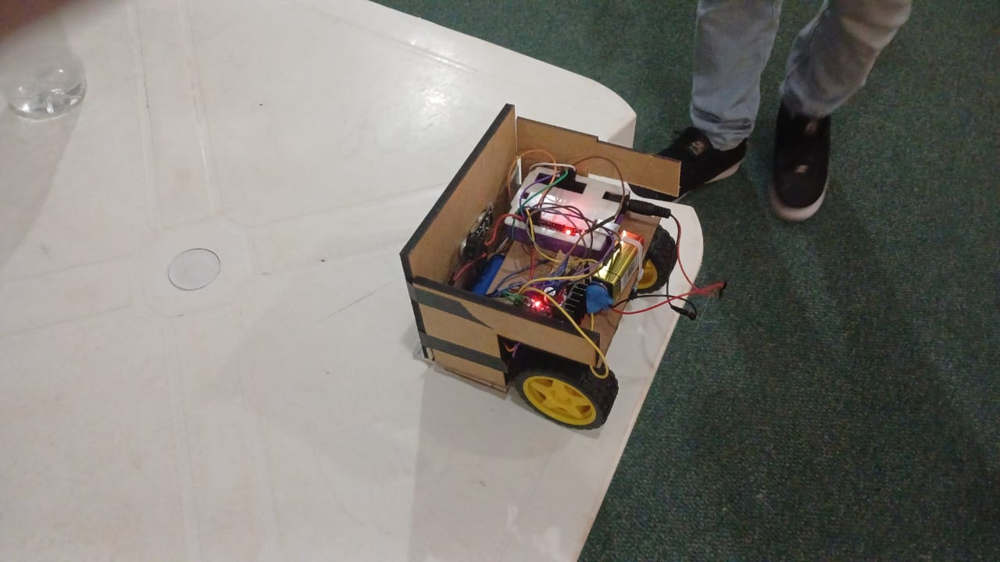
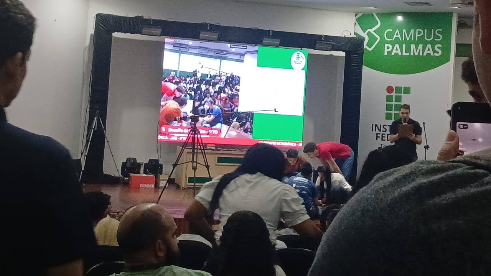

JICE - VIII Desafio de robótica - Final (Sumô)
Local: Auditório Central
Data e horário18/10/2024 - 08:30 - 09:30
O Final sumô ou bit sumo consistia entre uma competição clássica de sumo, onde
as equipes colocam os robôs em uma arena circular e o vencedor será aquele que
permanecer dentro da arena, o que fosse empurrado para fora seria o perdedor
nesta situação.
A competição foi feita entre várias equipes de outros campus do estado do
Tocantins, uma equipe em destaque seria a equipe Spartron do campus de
Porto Nacional que ficou entre primeiro e segundo lugar na competição estadual
de OLIMPÍADA BRASILEIRA DE ROBÓTICA, sendo então uma das equipes em destaque.


O evento de informatica em si foi muito bem organizado e variado,
tendo em vista que teve competições com varios temas definidos (na area de tecnologia) ,
tendo então uma diferença para cada dia em que seriam apresentados os eventos.
Uma coisa legal que poderia ser adicionada ao evento seria a forma que foi realizada a programação e a
construções desses robos, podendo entao juntar as equipes e mostrar qual linguagem foi utilizada para a construção
e os equipamentos que tiveram que utilizar, compartilhando assim o conhecimento para os estudantes ali presentes.